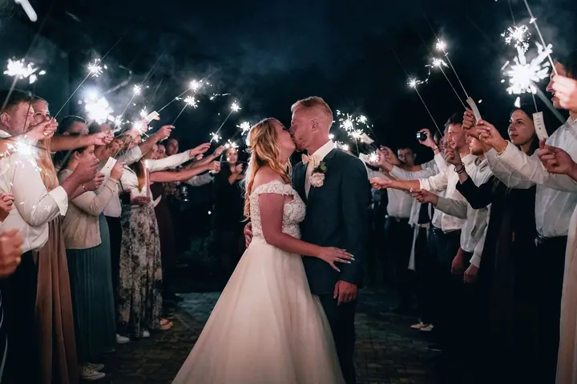
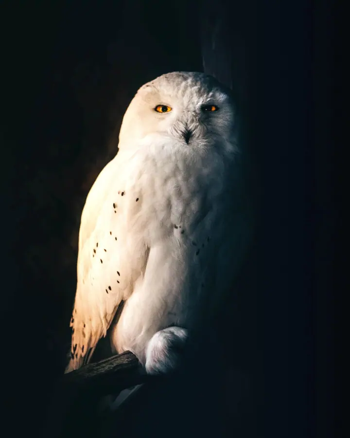
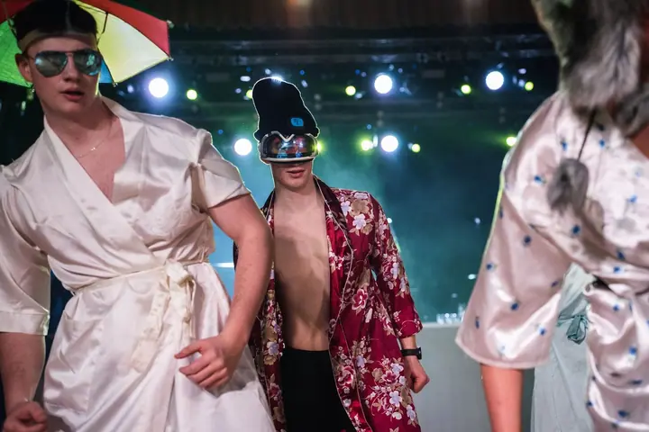

01 / 04
Svatby
Fotím svatby od příprav až po večerní oslavu. Podle vaší představy můžu přizvat i zkušeného kameramana nebo druhého fotografa.
Zeptat se na termín→





Fotím svatby, koncerty i divokou přírodu
Zeptat se na termín →(01) Ahoj
Jmenuji se Alexandr Zikmund, ale většina lidí mi říká Saša. Jsem fotograf a grafický designér na volné noze a fotím svatby , koncerty a společenské akce i zvířata a přírodu . Nejdřív si vždycky poslechnu, jak to vidíte vy.
(02) Co fotím
01 / 04
Fotím svatby od příprav až po večerní oslavu. Podle vaší představy můžu přizvat i zkušeného kameramana nebo druhého fotografa.
Zeptat se na termín→02 / 04
Fotím společenské a firemní akce, festivaly i koncerty. Hlídám atmosféru, světla a pódium i to, co se děje v publiku.
Zeptat se na termín→03 / 04
Nafotím celý maturitní ples od nástupu až po půlnoční překvapení. Fotky upravím rychle, abyste je měli brzy po plese.
Zeptat se na termín→Dále nabízím
Mám rád zvířata a přírodu a fotím je s důrazem na světlo a detail. Často jde o tmavé portréty, ve kterých vynikne pohled zvířete.
↗(03) Portfolio
Kliknutím fotku zvětšíte · fotografie jsou ilustrační
(04) Postup
Od první zprávy po hotovou galerii.
Krok 1 z 4
Napište mi přes formulář nebo zavolejte a stručně popište, co potřebujete nafotit.
Krok 2 z 4
Popovídáme si o vašem nápadu, termínu, rozsahu i o tom, jestli se hodí kameraman nebo druhý fotograf.
Krok 3 z 4
Podle domluvených požadavků vám pošlu cenovou nabídku přesně pro vaši zakázku.
Krok 4 z 4
Nafotím vaši svatbu, akci nebo ples a fotky pečlivě upravím. Pak vám je předám v domluvené podobě.

Nebojím se zkoušet jiné úhly pohledu.

(05) Za objektivem
Jsem freelance fotograf a grafický designér. Fotím svatby, společenské akce, maturitní plesy, zvířata, přírodu, produkty i architekturu a interiéry. Když vás napadne jiný žánr, klidně se ozvěte, rád se do něj pustím.
Žádná zakázka není stejná, a proto si s vámi nejdřív popovídám o vaší představě a pak se přizpůsobím vám. Na focení mám rád pohodovou atmosféru a nebojím se zkoušet jiné úhly pohledu. Na větší akce a svatby s sebou můžu vzít zkušeného kameramana nebo druhého fotografa.
Kromě focení se věnuji i grafice. Navrhuji tiskoviny, vizuály pro web a sociální sítě, upravuji fotky ve Photoshopu a pomůžu vám i s vlastním merchem. Fotky a grafiku tak můžete mít od jednoho člověka.
Alexandr
Alexandr Zikmund · Fotograf svateb, eventů a zvířat
Cenu stanovuji vždy na míru podle vaší představy, času a rozsahu. Pro orientaci: svatby od 5 000 Kč, eventy od 4 500 Kč, maturitní plesy od 8 000 Kč a focení zvířat od 3 000 Kč.
Ano. V týmu mám zkušeného kameramana, a když je potřeba, přizvu i druhého fotografa.
Fotím také produkty, rodiny, architekturu a interiéry, přírodu a zvířata. Když máte jiný nápad, napište mi a domluvíme se.
Ano, jsem také grafický designér. Navrhnu vám tiskoviny, grafiku pro web a sociální sítě nebo podklady pro váš merch.
(07) Kontakt
Napište pár vět o tom, co si představujete, a termín, který se vám hodí.